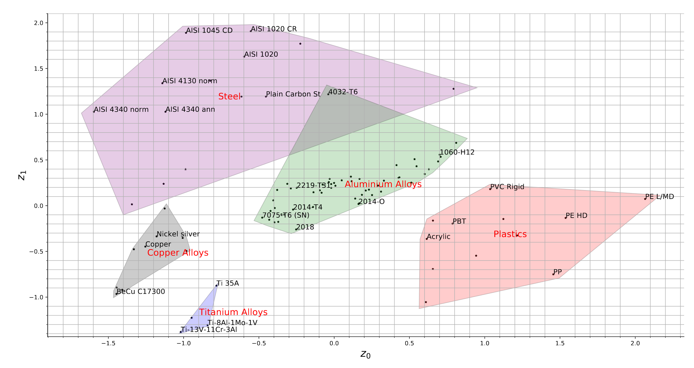

Saketh Sridhara
About

Information about you, your background, your research interests, and your current position.
Thanks for visiting my website! I am a PhD student at UW-Madison advised by with Prof. Krishnan Suresh at the Engineering Representations and Simulation Lab.
My research lies at the intersection of engineering design, machine learning and design optimization. Along these lines, I've developed a novel representation scheme for engineering materials and catalogs using neural networks. I've also worked on leveraging neural network representation and automatic differentiation for design of microstructures and multiscale designs. Find
My research philosophy is that optimization and machine learning methods are not just tools to design better structures but they can provide fundamental insights to engineering practitioners.
News
Research
|
|
|  |
Aaditya Chandrasekhar*, Saketh Sridhara*, Krishnan Suresh Submitted to Engineering with Computers, 2021 arXiv link / code *Equally Contributed |

|
Aaditya Chandrasekhar*, Saketh Sridhara*, Krishnan Suresh Structural and Multidisciplinary Optimization, 2021 arXiv link / code *Equally Contributed |

|
Tej Kumar, Saketh Sridhara*, Bhagyashree Prabhune*, Krishnan Suresh Computer Methods in Applied Mechanics and Engineering , 2021 ERSL Link / code |

|
Bhagyashree Prabhune, Saketh Sridhara, Krishnan Suresh International Jorunal of Numerical Methods in Engineering , 2021 ERSL Link / MATLAB code |

|
Akshay Desai, Mihir Mogra, Saketh Sridhara, Kiran Kumar, Sesha Gundavarapu, G.K. Ananthasuresh Structural and Multidisciplinary Optimization, 2021 |

|
Vaibhav Srinivasa, Saketh Sridhara, Ganesh Agile Nagappa, Bhagatsingh Amarnath Biradar Proceedings of the 2016 IEEE Aerospace Conference, 2016 |
|
|
|
World Congress of Computational Mechanics , 2020 (virtual) Link to video and slides |
|
World Congress of Structural and Multidisciplinary Optimization, 2019 (Beijing, China) Link to slides |
|
|
|
|
Publications
List of your publications, including links to the full text (if available) and citations.
Teaching
Information about the courses you have taught, including syllabi, course materials, and evaluations.
Teaching
Information about the courses you have completed.
CV
Link to a PDF version of your CV.
Contact
Your contact information, including your email address and office location.